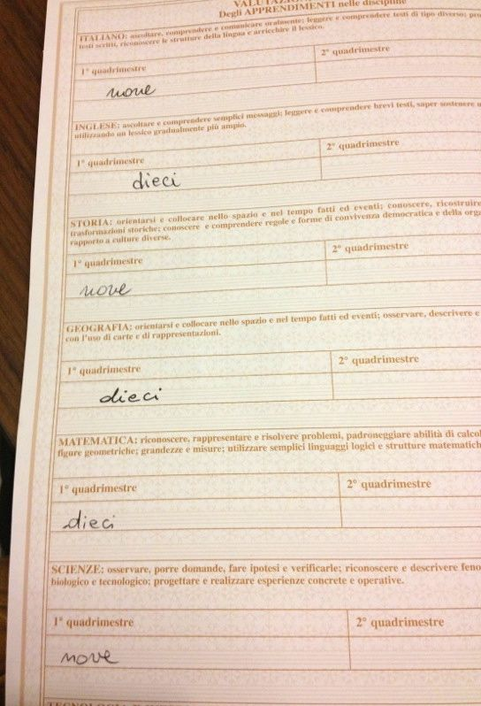

I'm a very proud Mom. Really proud. I knew this school experience would have been hard for the kids, but to be honest, I didn't expect the first school reports to be this good. Not because I don't trust my kids' abilities, but because I know that Italian schools are very demanding compared to the American ones. For example, Silvia's schedule is identical to the one she had last year in 6th grade: Monday through Friday, 6 periods each day. But while in the States she was done with her homework in 20-30 minutes at the most, here it takes her the whole afternoon to do it. And we are talking about 3-4 hours every day. If you add to this the fact that periodically they have a lot of tests and "interrogazioni" (where the teacher calls you out, and ask you questions in front of the class), you can imagine the scope of the pressure for a kid coming from abroad and who is not used to this system. Obviously she had a very though time in the beginning, but since she is a very diligent and organized student, she never gave up, even when she was down and kept asking me why I threw her into such a situation (needless to say that my explanations and attempts to comfort her were useless). So, when I went to retrieve her school report and heard the professor say that, considering the situation, she was doing great, I was thrilled. And happy to see that her efforts paid off. Alessio also did an excellent job, to my surprise I have to say, since every day I have to beg him to do his homework and, most of all, concentration is not his forte. However, he has this superb ability to learn quickly and remember even the smallest detail just by listening. So, if I think back to the first day of school when Silvia returned home with tears in her eyes and I felt a thousand doubts falling all over me, wondering if I was doing the right thing, now I can say that we made the right decision. I still keep telling them that this experience is a privilege that only a few kids have and that they'll understand its benefits only when they'll be older. They say I'm wrong, but I know, in my heart, that one day they'll agree with me and they'll thank Paolo and I for doing this. For now, I thank them for being such bravi ragazzi.